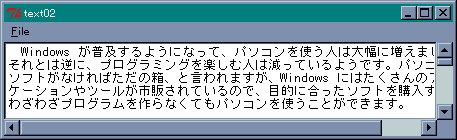

Tcl に用意されているファイル入出力は、Ｃ言語の標準入出力ライブラリとよく似ています。ファイルを読み書きするのに最低限必要なコマンドは次の 4 つです。
| open name mode | ファイル name をアクセスモード mode で開く |
| puts fileId string | 文字列 string をファイルへ書き込む |
| gets fileId var | ファイルから１行読み込み変数 var にセットする |
| close fileId | ファイルを閉じる |
ファイルにアクセスする場合、最初にコマンド open でファイルをオープンします。このとき、ファイルからデータを読み込むのか、ファイルへデータを書き出すのかを指定します。この情報を「アクセスモード」といいます。Tcl では以下の値を指定することができます。
| r | 読み出し専用でオープンする。ファイルが存在しないとエラーになる。 |
| r+ | 読み書き両用でオープンする。ファイルが存在しないとエラーになる。 |
| w | 書き込み専用でオープンする。すでにファイルが存在していれば内容を削除し、 ファイルがなければ新しいファイルを作成する。 |
| w+ | 読み書き両用でオープンする。すでにファイルが存在していれば内容を削除し、 ファイルがなければ新しいファイルを作成する。 |
| a | 書き込み専用でオープンする。データはファイルの最後に追加される。 ファイルがなければ新しいファイルを作成する。 |
| a+ | 読み書き両用でオープンする。データはファイルの最後に追加される。 ファイルがなければ新しいファイルを作成する。 |
コマンド open のアクセスモードは、Ｃ言語の標準ライブラリ関数 fopen() と同じです。このようなアクセスモードは初めてという方は、とりあえずリードオープン ( r ) とライトオープン ( w ) を覚えておけば十分です。リードオープンの場合、実際にファイルが存在しないとエラーになります。ライトオープンの場合、同名のファイルがあるとその内容は削除 (上書き) されるので注意してください。
open はオープンしたファイルを識別するための文字列 (fileId)、たとえば file9 といった文字列を返します。オープンしたファイルにアクセスするときは、この文字列を指定します。通常、open が返した文字列を変数に格納し、それを gets, puts などのファイルを操作するコマンドに渡します。標準入出力は、stdin, stdout, stderr という名前でアクセスすることができます。これもＣ言語と同じです。
それから Windows 上で Tcl/Tk を使う場合、パスの区切り記号に気をつけてください。Tcl/Tk は UNIX で生まれたプログラミング言語なので、パスの区切り記号にはスラッシュ ( / ) を使います。ご注意くださいませ。
データの読み書きは gets と puts を使います。gets はファイルから１行分データを読み込みます。このとき、行末の改行文字は捨てられます。第 2 引数に変数が指定された場合は、そこに読み込んだ行をセットして文字数を返します。ファイルの終端に達した場合は -1 を返します。変数を省略した場合は、読み込んだ行を文字列として返します。ファイルの終端に達した場合は空文字列を返します。
puts は文字列をファイルに書き込みます。このとき、行の最後に改行文字が付加されますが、オプションに -nonewline を指定すると、改行文字は付加されません。
開いたファイルはコマンド close を使って必ず閉じてください。一般に、アプリケーションが同時に開くことのできるファイル数には限度があり、ファイルの読み書きが終了したら、ファイルを閉じることをお勧めします。
簡単な例題として、ファイルの内容を出力するプログラムを作ります。GUI ではなく DOS 窓で動作させるので tclsh を使います。プログラムは次のようになります。
リスト : ファイルを標準出力へ書き出す (1)
foreach filename $argv {
if [file exists $filename] {
set f [open $filename r]
while {[gets $f buffer] >= 0} {
puts $buffer
}
close $f
} else {
puts "$filename が見つからない"
}
}
このプログラムが格納されているファイル名を file1.tcl とすると、次のように実行します。
C> tclsh file1.tcl ファイル名
tclsh のあとにバージョンを表す数値が続くことがあります。たとえば、筆者が使っているバージョンでは tclsh83 となります。
Tcl/Tk には、あらかじめ定義されている変数があります。実行するスクリプトファイル名を格納する argv0、コマンドラインの引数とその個数を格納する変数 argv と argc、環境変数を格納する配列 env などがあります。引数はリストに格納され argv にセットされます。
処理内容は簡単です。argv に格納されているファイル名を、foreach でひとつずつ取り出します。コマンド file は、ファイルの日付、サイズ、属性といった情報を取得するだけではなく、ファイル名の操作も行うことができます。入門編でも、ファイル名からパス部分を切り出すのに file dirname を使いました。
file exists はファイルがあるかチェックするコマンドです。ファイルがあれば 1 を、なければ 0 を返します。あとは、ファイルをリードオープンして gets で 1 行読み込み、それを puts で標準出力へ書き出します。ファイルを最後まで出力したら close でファイルを閉じます。
入力には gets のほかに、データをまとめて読み込む read があります。
read fileId num read [-nonewline] fileId
read は fileId から num バイトのデータを読み込み、それを文字列として返します。ファイルに num バイト分のデータが残っていない場合は、ファイルを最後まで読み込みます。バイト数の指定が省略された場合も、ファイルを最後まで読み込みます。このとき、オプションに -nonewline が指定されると、最後に改行文字がある場合は削除します。
ファイルの終端はコマンド eof でチェックすることができます。
eof fileId
fileId のファイルが終端に達している場合は 1 を、そうでなければ 0 を返します。
それでは read と eof を使って、前の例題を書き直してみましょう。
リスト : ファイルを標準出力へ書き出す(2)
foreach filename $argv {
if [file exists $filename] {
set f [open $filename r]
while {![eof $f]} {
puts [read $f 1024]
}
close $f
} else {
puts "$filename が見つからない"
}
}
eof でファイルの終端をチェックし、データが残っていれば read で読み込んで puts で出力します。とても簡単ですね。一般に、ファイルの入出力は行単位で行うよりも、ある程度の大きさでまとめて行った方が効率的です。行単位で入出力を行う必要がない場合は read を使った方がよいでしょう。
ところで、read があれば出力用のコマンド write があるものですが、Tcl には用意されていません。テキストファイルの操作であれば、文字列を出力する puts で十分なのです。ここでちょっと脱線して、「テキスト」と「バイナリ」というファイルの種類について説明します。
ファイルには大きく分けると、「テキストファイル」と「バイナリファイル」の 2 種類があります。ここでいうテキストファイルは、ワープロソフトなどで作成したドキュメントではありません。ワープロで作成したドキュメントには、文字修飾などの情報が付加されているため、テキストエディタやほかのワープロソフトで読むことはできません。
M.Hiroi は xyzzy というエディタを使ってプログラムやドキュメントを書いていますが、エディタで作成したファイルにはアスキーコードや全角文字など、文字を表すデータしか格納されていません。これをプレーンテキストと呼ぶことがあります。逆に、バイナリファイルには文字以外のデータが含まれているので、テキストエディタでは表示することができないのです。ワープロで作成したドキュメントは、この基準で区別するとバイナリファイルになるわけです。
Windows (MS-DOS) でプログラムを作る場合、この違いに注意しないといけません。ファイルをオープンする場合、テキストファイルは「テキストモード」で、バイナリファイルは「バイナリモード」で行います。Ｃ言語の場合、ファイルをオープンする標準ライブラリ関数 fopen() のアクセスモードで、"rb" や "wb" のように b を付けることでバイナリモードを指定します。ところが Tcl/Tk の場合、コマンド open のアクセスモードで b を指定することはできません。なぜかというと、UNIX ではテキストモードは存在せず、すべてのファイルをバイナリモードで扱うからです。
実は MS-DOS の仕様が、この 2 つのモードを生み出したのです。UNIX では改行文字 \n までを行として扱います。UNIX を開発するために設計されたプログラミング言語がＣ言語です。当然のように、Ｃ言語でも \n までを行として扱います。その後、Ｃ言語は UNIX から一人歩きを始め、MS-DOS 上のプログラミングにも使われるようになりました。このとき、行の取り扱いが問題 *1 になったのです。というのも、MS-DOS では \r\n の 2 バイトで改行文字を表していたからです。
この違いを吸収するために考えられた方法が、「テキストモード」と「バイナリモード」なのです。テキストモードでファイルを読み込むと、\r\n の改行文字を \n に変換し、ファイルに書き込むときは、\n を \r\n に変換してから行われます。テキストファイルを扱う場合はこれでいいのですが、画像ファイルなどのバイナリファイルにアクセスする場合、このままではデータを破壊することになります。バイナリファイルを扱う場合は、改行の変換を行わないバイナリモードでなければいけないのです。
Windows 版の Tcl/Tk の場合、デフォルトではテキストモードになっています。これをバイナリモードへ変更するにはコマンド fconfigure を使います。
fconfigure fileId オプション
改行文字の変換はオプション -translation で設定します。
| auto | 入力は自動判別、出力はシステムの標準に合わせる |
| binary | 改行文字の変換を行わない |
| cr | cr (\r) を改行文字として使用する |
| lf | lf (\n) を改行文字として使用する |
| crlf | crlf (\r\n) を改行文字として使用する |
Tcl 8.0 以降では、文字列にバイナリデータを含めることができ、それを操作するコマンド binary が用意されています。ですが、実際に Tcl/Tk でバイナリファイルを扱うプログラムを書くことはほとんどないでしょう。小さなデータであれば、テキストファイルのままで十分だと思います。
いよいよ巨大なウィジェットである「テキストウィジェット」を説明します。エントリーがラインエディタとするならば、テキストはスクリーンエディタに相当し、柔軟で高度なテキスト編集を行うことができます。
テキストウィジェットはコマンド text で生成します。
text ウィジェット名 オプション
テキストウィジェットには標準動作が用意されていて、それだけでテキスト編集が可能になっています。マウスの操作は、左クリックでカーソル位置の変更、ドラッグで範囲の選択、ダブルクリックで単語の選択が行えます。また、トリプルクリックで行の選択、ドラッグで文字列の選択ができます。カーソルなどのキー操作は、おおむね Emacs と同じなので、Emacs / Mule ユーザーには馴染みやすいでしょう。
テキストウィジェットの場合、オプション -width と -height は桁数と行数を表します。使用するフォントによってウィンドウのサイズが変わることに注意してください。また、オプション -state に disabled を設定すると、テキストの変更を禁止することができます。これはキーボートからの入力だけでなく、プログラムによる挿入や削除も禁止されるので、必要なテキストデータをウィジェットに挿入してから、-state を disabled に設定してください。それから、オプション -wrap で行の折り畳みを設定することができます。none を指定すると折り畳みは行われません。char は文字の切れ目で、word は単語の切れ目で折り畳みます。
テキストウィジェットはリストボックスと同様に、スクロールバーと組み合わせて表示範囲を変更することができます。このほかにも、文字列の挿入、削除、検索といった、テキストエディタとして必要なウィジェットコマンドが用意されています。多くのコマンドで位置の設定が必要ですが、基本的な指定方法を表に示します。
| N.M | N 行の M 文字目 |
| @x,y | テキスト内の (x, y) の位置にある文字 |
| end | テキスト末尾 |
| マーク名 | その名前のマークをつけた位置 |
| タグ名.first | その名前のタグの最初の位置 |
| タグ名.last | その名前のタグの最後の位置 |
マークとタグについてはあとで詳しく説明します。テキストウィジェットでは、行は 1 から数えますが、文字は 0 から数えるので注意してください。この基本指定に加えて、次のような相対指定を組み合わせることができます。
| +Nchars, -Nchars | そこから N 文字先、手前 |
| +Nlines, -Nlines | そこから N 行先、手前 |
| linestart, lineend | その行の先頭、末尾 |
| wordstart, wordend | その単語の先頭、末尾 |
テキストウィジェットは多機能なので、ほかのウィジェットに比べて使いこなすのはちょっと難しいと思います。ですが、テキストを表示するだけならば、とても簡単に実現することができます。まず最初に、テキストファイルを表示するプログラムを作ってみましょう。ただ表示するだけではつまらないので、行番号を表示するメニューを用意します。基本的には入門編で作成した画像ファイルローダーと同じです。tk_getOpenFile でファイルを選んで、内容をテキストウィジェットで表示します。
メニューの設定は入門編で作成した画像ローダーとほぼ同じです。
リスト : メニューの設定
menu .m -type menubar
. configure -menu .m
.m add cascade -label "File" -under 0 -menu .m.m1
menu .m.m1 -tearoff no
.m.m1 add command -label "Open" -under 0 -command "load_file"
.m.m1 add separator
.m.m1 add checkbutton -label "Number" -under 0 -value num_flag \
-command change_number
.m.m1 add separator
.m.m1 add command -label "Exit" -under 0 -command "exit"
テキストのリードは load_file で行います。行番号の表示は change_number で行います。次にテキストウィジェットを作成します。
リスト : テキストウィジェットの生成
# フォントの指定
option add *font "{ＭＳ ゴシック} 10"
# テキストウィジェット
text .t0 -xscrollcommand ".s0 set" -yscrollcommand ".s1 set" -wrap none
# スクロールバーの設定
scrollbar .s0 -orient horizontal -command ".t0 xview"
scrollbar .s1 -command ".t0 yview"
grid .t0 -row 0 -column 0 -sticky nsew
grid .s0 -row 1 -column 0 -sticky ew
grid .s1 -row 0 -column 1 -sticky ns
# ウィンドウのリサイズに対応
grid columnconfigure . 0 -weight 1
grid rowconfigure . 0 -weight 1
フォントの指定とスクロールバーを設定しています。x 方向にもスクロールバーを指定しているので、オプション -wrap には none を設定しています。あとは難しいところはないでしょう。テキストを読み込む load_file は、次のようになります。
リスト : テキストファイルを読み込む
proc load_file {} {
global path_name num_flag line_count
set filename [tk_getOpenFile -initialdir $path_name \
-filetypes {{{TextFiles} {.txt .doc}}}]
if {$filename != ""} {
set path_name [file dirname $filename]
.t0 delete 1.0 end
set f [open $filename]
set line_count 1
while {[gets $f line] >= 0} {
.t0 insert end "$line\n"
incr line_count
}
close $f
}
if $num_flag {
insert_number
}
}
tk_getOpenFile でファイル名を取得したら、パスを取り出して大域変数 path_name にセットします。ファイル名をゲットしたら、それが空文字列でないことを確認します。データを挿入するウィジェットコマンドが insert で、削除するコマンドが delete です。まず、表示しているテキストを delete で削除します。1.0 は 1 行目の 0 文字、つまりテキストの先頭を表します。
次に、open でファイルをリードオープンし、gets で 1 行ずつ入力していきます。insert の位置指定は end なので、文字列はテキストウィジェットの最後に追加されます。gets は行末の改行文字を削除するので、'\n' を付け加えてから挿入します。読み込んだ行数は大域変数 line_count で数えます。最後に、フラグ num_flag が真であれば行番号を表示します。行番号の表示は insert_number で、削除は delete_number で行います。
insert_number は次のようになります。
リスト : 行番号の挿入
proc insert_number {} {
global line_count
for {set i 1} {$i < $line_count} {incr i} {
.t0 insert $i.0 [format "%6d:" $i]
}
}
行番号は行の先頭に挿入することで表示します。変数 i は行番号を表し、挿入する文字列を format で作成しています。この場合、先頭に空白を含めて 7 文字挿入することになります。次は delete_number です。
リスト : 行番号の削除
proc delete_number {} {
global line_count
for {set i 1} {$i < $line_count} {incr i} {
.t0 delete $i.0 $i.7
}
}
行番号の削除は行の先頭から 7 文字削除するだけです。ウィジェットコマンドの範囲指定では、終了位置の文字は範囲に含まれません。これで 0 から 6 文字目までの 7 文字が削除されます。メニューから起動されるコマンド change_number は、フラグ num_flag の値で insert_number か delete_number を呼び出します。ただし、最初はテキストファイルを読み込んでいないので、line_count を 0 に初期化しておいて、テキストファイルの有無をチェックします。これでプログラムは完成です。
 テキストの表示
#
# テキストファイルを表示する
#
# Copyright (C) 2001 Makoto Hiroi
#
# ファイルを選んで表示する
proc load_file {} {
global path_name num_flag line_count
set filename [tk_getOpenFile -initialdir $path_name \
-filetypes {{{TextFiles} {.txt .doc}}}]
if [string compare $filename ""] {
set path_name [file dirname $filename]
# テキストをクリア
.t0 delete 1.0 end
# ファイルの読み込み
set f [open $filename]
set line_count 1
while {[gets $f line] >= 0} {
.t0 insert end "$line\n"
incr line_count
}
close $f
if $num_flag {
insert_number
}
}
}
# 行番号を取り除く
proc delete_number {} {
global line_count
for {set i 1} {$i < $line_count} {incr i} {
.t0 delete $i.0 $i.7
}
}
# 行番号を付ける
proc insert_number {} {
global line_count
for {set i 1} {$i < $line_count} {incr i} {
.t0 insert $i.0 [format "%6d:" $i]
}
}
# メニューから起動される
proc change_number {} {
global num_flag line_count
if $line_count {
if $num_flag {
insert_number
} else {
delete_number
}
}
}
# ********** メニューの設定 **********
menu .m -type menubar
. configure -menu .m
.m add cascade -label "File" -under 0 -menu .m.m1
menu .m.m1 -tearoff no
.m.m1 add command -label "Open" -under 0 -command "load_file"
.m.m1 add separator
.m.m1 add checkbutton -label "Number" -under 0 -variable num_flag \
-command change_number
.m.m1 add separator
.m.m1 add command -label "Exit" -under 0 -command "exit"
# テキストウィジェットを作る
option add *font "{ＭＳ ゴシック} 10"
text .t0 -xscrollcommand ".s0 set" -yscrollcommand ".s1 set" -wrap none
scrollbar .s0 -orient horizontal -command ".t0 xview"
scrollbar .s1 -command ".t0 yview"
grid .t0 -row 0 -column 0 -sticky nsew
grid .s0 -row 1 -column 0 -sticky ew
grid .s1 -row 0 -column 1 -sticky ns
# ウィンドウのリサイズに対応
grid columnconfigure . 0 -weight 1
grid rowconfigure . 0 -weight 1
# 大域変数の初期化
set path_name ""
set num_flag 0
set line_count 0